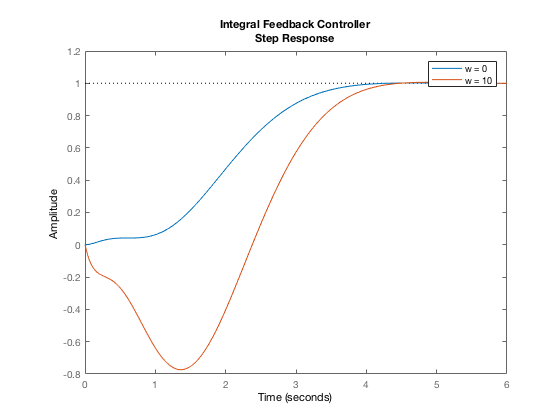

Linear Control Systems Homework 5
- Problem 2
- Arthor: Xinyi Cai
Contents
Housekeeping
clc;
clear all;
Given Values
A = [-0.2 -5 10; -0.1 -1 0; 0 1 0];
B = [10 8 0]'; Bw = [-0.2 -0.1 0]';
C = [1 0 0];
D = 0;
w = [0 10];
vd = 1;
Part a
[V_mtx, D_mtx] = eig(A)
V_mtx =
-0.9871 + 0.0000i 0.9936 + 0.0000i 0.9936 + 0.0000i
-0.1381 + 0.0000i -0.0596 + 0.0340i -0.0596 - 0.0340i
0.0805 + 0.0000i 0.0157 + 0.0885i 0.0157 - 0.0885i
D_mtx =
-1.7149 + 0.0000i 0.0000 + 0.0000i 0.0000 + 0.0000i
0.0000 + 0.0000i 0.2575 + 0.7189i 0.0000 + 0.0000i
0.0000 + 0.0000i 0.0000 + 0.0000i 0.2575 - 0.7189i
Part b
poles = [-2; -2; sqrt(2)*(-1+1j); sqrt(2)*(-1-1j)];
Abar = [A zeros(length(A), 1); C 0];
Bbar = [B; 0];
Bwbar_1 = [Bw*w(1); -vd];
Bwbar_2 = [Bw*w(2); -vd];
K = acker(Abar, Bbar, poles)
K =
0.3769 0.2324 3.5978 0.2000
Part c
sys1 = ss(Abar-Bbar*K, Bwbar_1, [C 0], D);
sys2 = ss(Abar-Bbar*K, Bwbar_2, [C 0], D);
figure;
step(sys1, sys2)
legend('w = 0', 'w = 10')
title({'Integral Feedback Controller', 'Step Response'})
